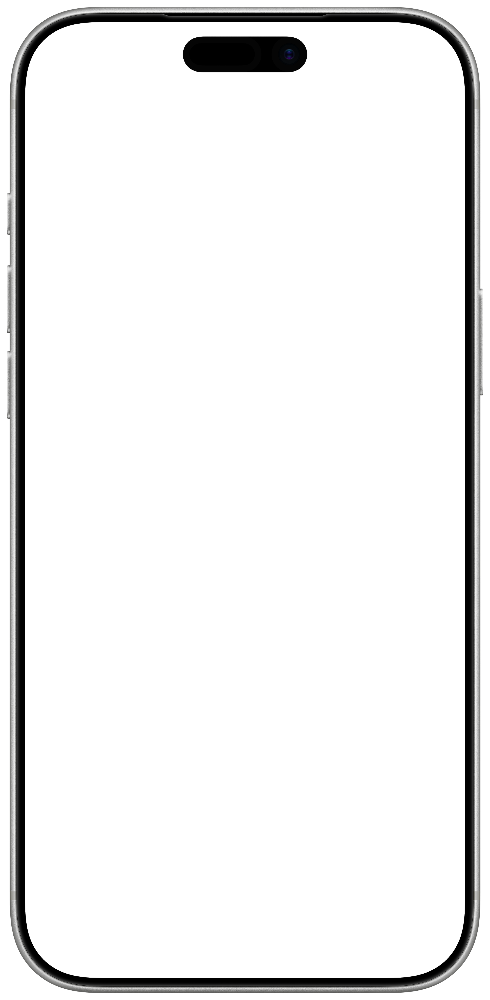
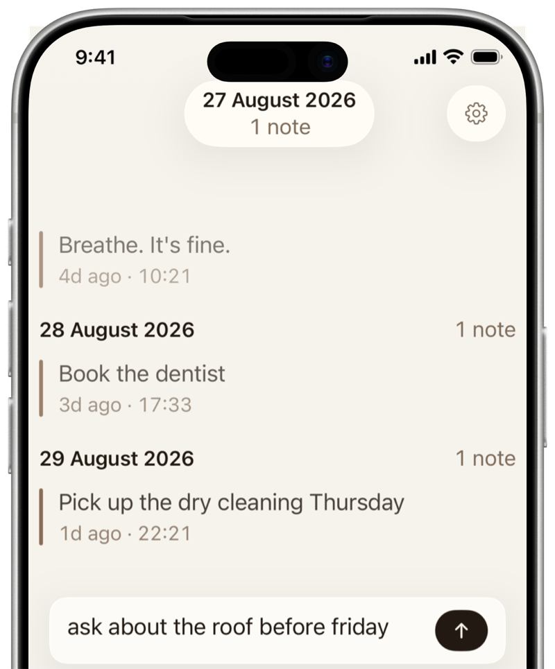
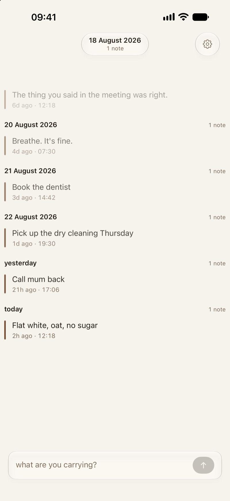
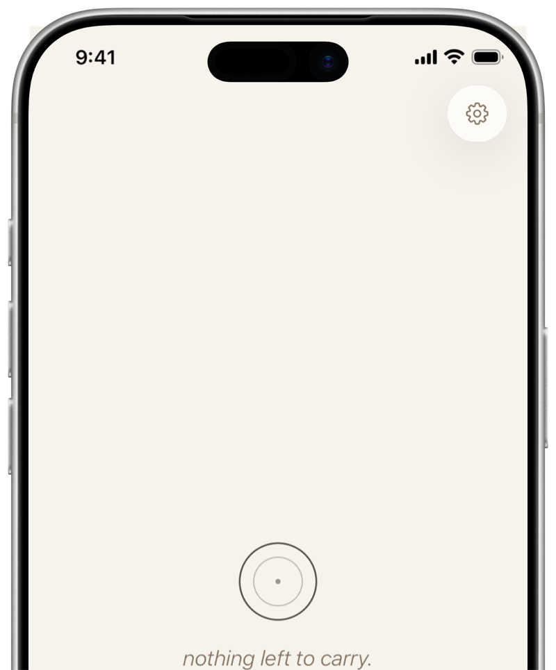

a week,
then gone.
— pensieve, a journaling app where notes fade and disappear
notes that fade on their own, so you never have to tidy up after yourself.
free · no account · no analytics

how pensieve works
write
type what you’re carrying. no title, no tag, no category.

fade
your note goes lighter as the days pass. by default it’s gone in a week.

release
gone. you don’t file it or delete it. it just goes.

watch one go.
type a thought and leave it. it fades over about twenty seconds here — in the app you’d have a week.
nothing you type here leaves your browser — not stored, not sent, no third parties.
built to forget.
most apps keep everything. pensieve keeps only what you choose.
pin it,
or extend it.
need one a bit longer, hold on to it. everything else goes on its own, with nothing to decide.
no archive,
no search.
there is nowhere to go digging. the past doesn’t follow you here.
no account,
no tracking.
no sign-up, no ads, no analytics. your notes never touch a server of ours. we don’t have any.
private by design.
your notes live on your device. turn on iCloud sync and they travel through your own private iCloud, never through us.
free. an optional supporter purchase unlocks never — notes that stay.
read the privacy policy →questions
a week by default. you can change that in Settings, or extend a single note from its menu. pin a note and it won’t fade until you unpin it.
no. when a note fades on its own it’s gone for good, that’s the whole point. notes you delete by hand sit in Trash for 30 days first, in case you change your mind.
pensieve is free. an optional supporter purchase unlocks never, an extra option when you release a note: those notes stay until you delete them, rather than being paused the way a pin is. everything else is free, with no ads and nothing to sign up for.
pinning is free, and it’s a pause rather than a decision: a pinned note stops fading until you unpin it, then carries on. use it for things you need a bit longer but not forever.
no. a note stays what you wrote when you wrote it. you can copy it, extend it, pin it, or delete it.
only if you ask it to. iCloud sync is off by default. turn it on and your notes sync across your own Apple devices through your private iCloud, never through a server of ours.
iPhone only for now.
iOS 17 or later.
a week is usually enough.